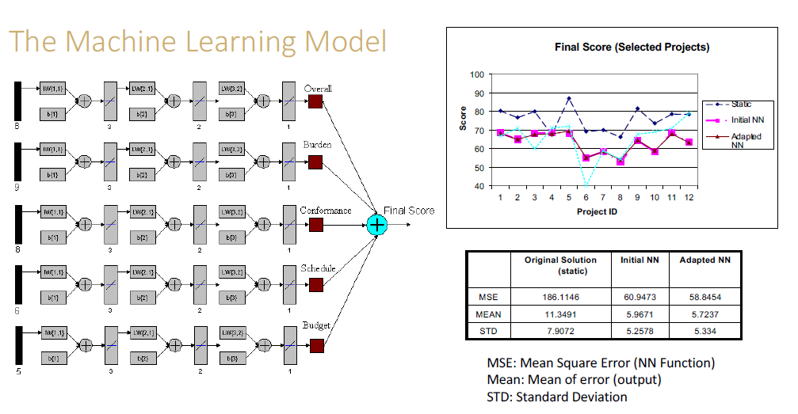

Neural Networks
Designed from how our own neurons work, i.e. the human brain!
See the Terminology tab for detailed basics.
Use Case
Suppose we were building a model which had highly volatile contextual features.
- static model is based on linear regression (tradition)
- model became obsolete rapidly because of context change
- model did not learn from other projects’ experience / performance
The System
- in essence, neural networks are weighted voting systems
- each neuron in the hidden layer aggregates the weighted votes from the nodes in the input layer
- the output neuron aggregates the weighted votes from the nodes in the hidden layer
Elements
- hidden layers
- units
- activation function
- objective function
- weights
How do They Learn?
- forward propagation
- weights are initialized or updated
- computation flows from the input layer to the output layer through hidden layers
How are the Weights Updated?
- stochastic gradient descent
- computing the gradient of the loss function with respect to each weight through the chain rule
- computing the gradient one layer at a time and iterating backward from the output layer to the input layer
Multi-Class Neural Networks
Softmax
- logistic regression produces:
- probability between 0 and 1
- the probability represents the likelihood of the input belong to the class (Y/N)
- softmax extends this idea into a multi-class world
- softmax produces:
- a set of probabilities between 0 and 1
- each probability represents the likelihood of the input belonging to a particular class
Summary
- neural networks are nets of layers and nodes
- nodes at each layer sum up the weighted inputs and activate it to the next layer
- provides a way of learning features
- highly nonlinear prediction functions
- backpropagation is a special case of reverse-mode Automatic Differentiation (AD) and provides an efficient way to compute gradients
- hyperparameters are a new way of learning
Hyperparameters
- number of hidden layers (depth)
- number of units per hidden layer (width)
- type of activation functions
- form of the objective function
- weights initialization
Topology
The topology of a neural network describes:
- Hidden layers as parameter
- Units per hidden layers as a parameter
- Output: 1 unit per class if more than two classes
- Trial-and-error: different topology, different initial weights
Example: design-build project
- five networks
- three layers
- three nodes for the input layer
- two nodes for the hidden layer
- one node for the output layer
